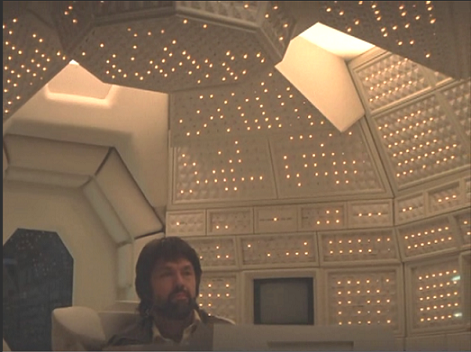
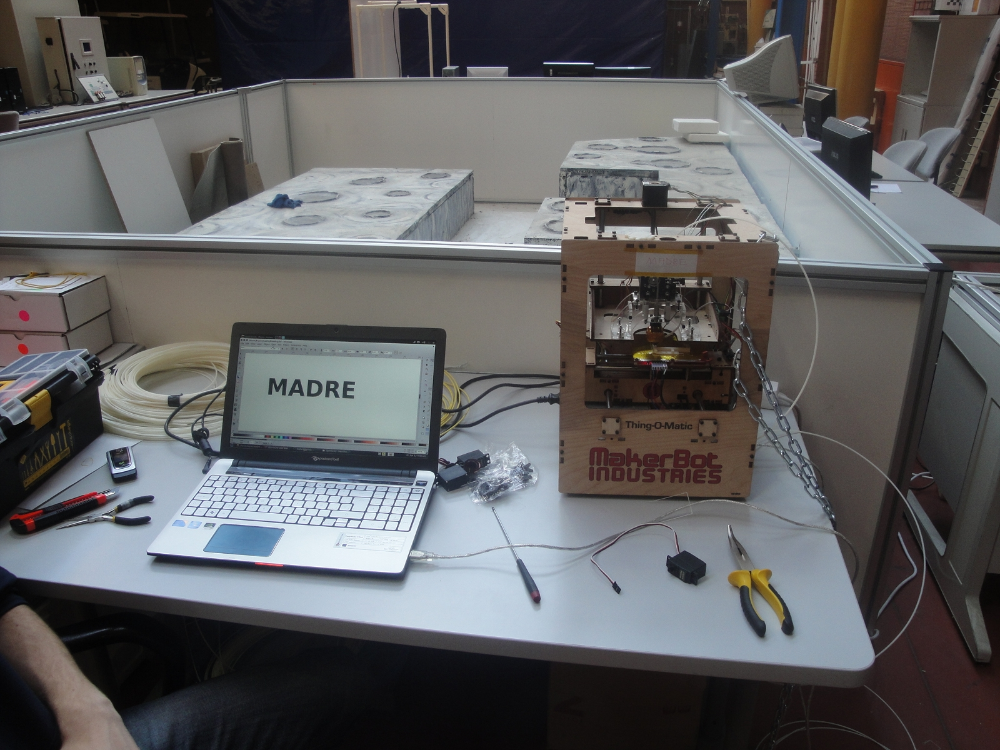
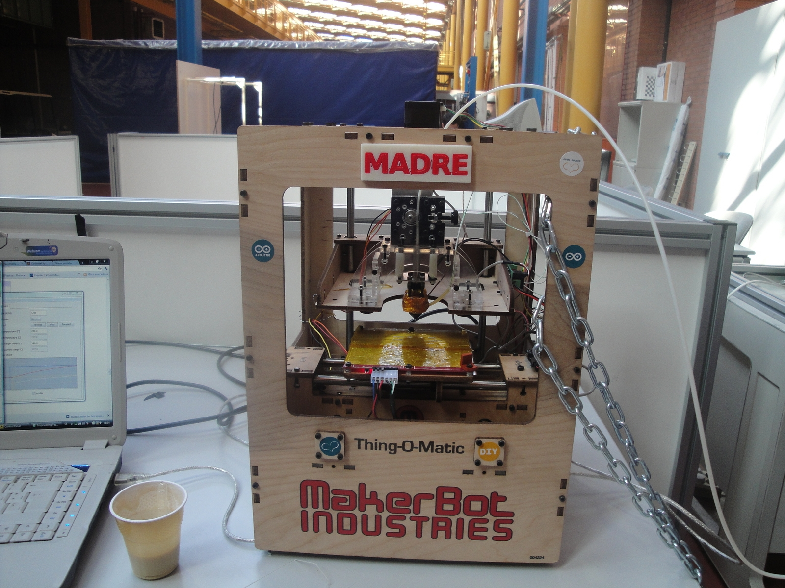
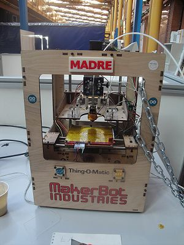
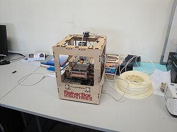
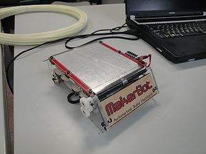

Contenido
[ocultar]Introducción
MADRE es la primera impresora 3D de la Asociación de Robótica de la UC3M (ASROB). Se compró con el presupuesto concedido al grupo de impresoras 3D, que fue de 1200€.
El impulsor fue el profesor Juan González (Obijuan). Se encargó de realizar la propuesta, conseguir el dinero, gestionar la compra y ayudar en el montaje/calibración.
El precio de la impresora fue de 920€ (+aduana + gastos envío).
Ficha
 |
|
 |
Fotos
| Álbum de Fotos | ||
|---|---|---|
|
 |
 |

|
Vídeos
|
3/Jun/2011: Madre imprimiendo |
17/Mayo/2011: Madre ha |


Historia
- 10/Oct/2012:
- Completada la migración
- Al día de hoy, la dinastía MADRE tiene 10 clones!!
- 01/Sep/2012: Comenzada la migración desde la página original a esta wiki
- 19/Ene/2012: (Blog) MADRE ha parido a dos clones más: Maese Artorius] y Mardan]
- 06/Ene/2012: MADRE ha tenido su primer hijo: el clon Death Star
- 13/Junio/2011: Nueva placa identificativa para MADRE, por Jon Goitia
|  Click para ampliar |
 Click para ampliar |
- 03/Junio/2011: MADRE está en la Nave (Blog)
 Click para ampliar |
|
- 17/Mayo/2011:
- MADRE: (Blog) Finalizado el montaje. ¡Ha impreso su primera pieza!
|  Click para ampliar |
|
- 13/Mayo/2011: Comenzado el montaje de Madre (Blog)
|  Click para ampliar |
|


- 12/Mayo/2011: (Blog) LA IMPRESORA HA LLEGADO!
- 06/Mayo/2011: Ha llegado el primer paquete: plástico negro y naranja
- 1/Abril/2011: Comprada la impresora. Se espera recibirla en 5-6 semanas
- 14/Marzo/2011: Resolución de la convocatoria. Nos conceden 1200€ (PDF)
- 8/Enero/2011: Memoria para solicitar la subvención. Se solicitan 2000€ (PDF) (ODT)
- 11/Nov/2010: Abierta la 18ª convocatoria de asociaciones (PDF)
Enlaces
|
|
Proyecto Clone Wars: Construye tu impresora 3D opensource! |
| Grupo de Impresoras 3D de la asociación de robótica de la UC3M |